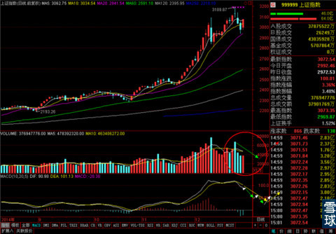
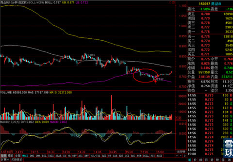
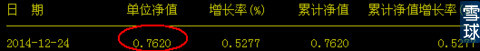
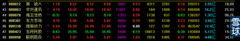

这个是今天正常的笔记
今天写稿子的过程里，想找到对使用技术分析进行股票操作的一种浅显比喻，想来想去，感觉依赖技术分析进行操作效果比较成功的投资者其实可以分成两类。一类是程咬金类型的技术分析使用者，就是通过长期的操作和思考，积累并总结出自己的一套“三板斧”，见到适应于自己这“三板斧”的股票，就二话不说上去就动手。但是不保证每次都能打得过对手。但是这“三板斧“可靠性足够高的话，就会和程咬金一样，十个对手里能拍倒七个，剩下三个打不过的，吃点亏就跑。算算总账还是赚的。这类投资者多见于有多年投资经验的老散户。
另一类是宗师级技术分析使用者，就是掌握一些股市运行的基本规律，在这个规律的基础上有一套随时随地适应情况变化的打法。好比去比武，我出一招黑虎掏心，对手可能有很多种招式可以应对，但是无论对手用”铁门栓“还是”如封似闭“，我都有后手可以顺利化解，甚至对手招式还没出全，我进招的时候他左肩先动了。我就猜到他一定是接”铁门栓“而不是其它招式，我先一步把下面的招式都安排好，几招下来，敌人必然被我打败。这种投资者往往有些极其宽宏的视野和超强的应变能力。
大多数投资者一生都梦想成为后一种投资者，好看一只股票之后，只要观察到指标一点点动向或者成交量以及换手率的变动。就清楚的猜测到市场主力的意图。提前安排好自己所有的应对措施。这样的投资者每一笔交易基本都不会跑空，即使暂时撤退，一逮到机会马上就翻盘。几乎怎么操作都能战胜市场。
但是后一种情况真的是很难。技术，经验，心态等等缺一样都做不到。
所以很多老散户，走了两轮牛熊市下来，大多选择做了程咬金式的打法。
这是一点能让大家迅速对操作思路有一个清晰认识的比喻，正好今天想起来了，就顺便说一下，给大家做个参考。
回到今天的大盘走势，大盘经历了前几天权重涨，大多数股票全跌停。权重跌，个股涨。到了今天是全线上涨。这种让人摸不着头脑的走势之后。
我个人感觉，下一步不会是连续的大涨。虽然60分钟线在0轴下方不远处做了金叉，但是金叉的效力有待考验。日线上MACD依然是一个比较凶险的图形。所以大家还是控制住仓位，不要被短期的突然普涨吸引，而过早重仓跟进。

预计之后一段时间的日线MACD走势应该是图中这样的，成交量可能还要在现在这个水平上维持一段时间。这段时间可能要以震荡修复MACD为主。指数可能一直压着MA20运行。如果30分钟线和60分钟线上出现积极的买入信号，可以轻仓做一些分级基金的短线差价。但是只要日线上MACD的白线没翻到黄线之上。成交量没有温和放大的迹象，最好不要重仓持有指数类产品。对于银行，证券等前期涨幅很猛，但是现在都出现死叉的股票也是一样的道理，短线可以找机会做差价。但是MACD修复之前，千万别重仓死磕。
昨天商品B有出现过一次非常好的套利机会，但是因为我休息了，所以没把握到。

昨天在15分钟线上红圈所显示的位置——0.737，这个时候一是价格跌破到BOLL下轨之外，正常情况下应该有反弹。二是这个价位出现了折价情况，也就是说商品B当时的净值是

低于交易价格不少。正常情况下分级基金的B份额应该是对交易价格稍微一点溢价。即使在熊市里也是，现在市场环境还可以，但是出现折价加上BOLL下轨的支撑进行反弹可能。两者叠加。总资金量10万以上的，可以用个2万左右资金去买一点试试。反弹到净值价位附近可以减一点仓，稳住获利。之后看15分钟线BOLL中轨如果对反弹造成压制了，那么就出清走人就可以了。顺利的话，两到三天赚上800——1000左右的机会是有的。
买入之后如果没反弹，大盘也继续下跌，只要跌破BOLL下轨，就马上离场。损失也就控制在300——400之间。
这种超短线是我在震荡市里比较喜欢做的。有充足短线交易经验的可以参考一下。如果是新手，就看看就完了，不要随便尝试。
最近很多小伙伴说之前我在大盘可能要开始高位震荡时期选出来的那几个股票，有着急没忍住的，高位提前进场了。想知道现在该怎么办。

照目前走势看，因为大盘最近的调整，这几个股票大多数出现了日线的MACD死叉，但是好在抗跌性相对最近其它股票来说已经很理想了。而且大多数有下方周线BOLL上轨和中轨的支撑，只要不是仓位特别重，暂时可以留着。
如果有走势恶化的情况出现，我会在专栏里提醒大家。
目前我自己还是昨天那些持仓，一笔新的交易也没做。好好休息几天，等大盘走势明朗再说。毕竟我在之前这段时间里赚了很多了，现在大盘走得诡异，那就不争这几天的盈利，免得偷鸡不成蚀把米，不赚钱还要回吐利润。
炒股票其实目的很简单，不就是为了赚钱么？赚钱不就是为了让自己的财务状况好一些么？财务状态好了心情就好。如果赚了钱还要天天赚，好赚不好赚的时候不肯休息，整的自己提心吊胆的，那这股票炒得就没有价值了。
因为和我们参与这个市场的初衷相违背了。
昨天组装的圣诞树效果还不错，给大家看看。
年终岁尾了，让主力们折腾去吧！我们要享受节日和生活吖！享受完了，咱们再接着跟主力吃肉喝汤啥的。怎么想是不是很靠谱？
 |
这个是今天正常的笔记 今天写稿子SaiLv 2014-12-25 16:28:16 |
Copyright © 1996-2014 SINA Corporation All Rights Reserved.